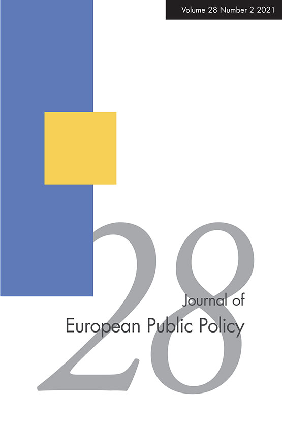
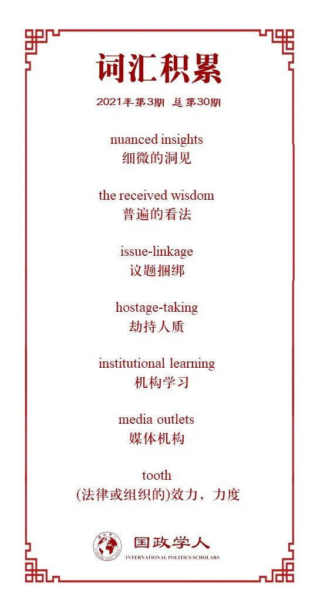

收录于合集

作品简介
【作者】 Corina Lacatus, 贝尔法斯特女王大学政治与国际关系讲师，Ulrich Sedelmeier, 伦敦政治经济学院国际关系助理教授。
【编译】 江若婵 (国政学人编译员，伦敦政治经济学院)
【校对】 常佳艺
【审核】 胡可怡
【排版】 林祉欣
【美编 】马颖
【来源】 Lacatus, C., Sedelmeier, U. (2020) “Does monitoring without enforcement make a difference? The European Union and anti-corruption policies in Bulgaria and Romania after accession”, Journal of European Public Policy , 27(8), pp.1236-1255.
【归档】 《国际关系前沿》2021年第3期，总第30期。
期刊简介

《欧洲公共政策杂志》是一份经过同行评审的学术期刊，其主要目的是将理论和实证方法整合到整个欧洲的公共政策研究中。此期刊涵盖的主要研究领域是: 公共政策，欧洲政治和欧盟的研究。根据期刊引文报告 (Journal Citation Reports), 2019年该期刊的影响因子为4.177，在政治科学类的180部期刊中排行第7，在公共行政类的48部期刊中排名第3。
在没有强制执行的情况下进行监督会有作用吗？欧盟与加入欧盟后保加利亚和罗马尼亚的反腐政策
Does monitoring without enforcement make a difference? The European Union and anti-corruption policies in Bulgaria and Romania after accession
Corina Lacatus
Ulrich Sedelmeier
内容提要
欧盟已将有效的腐败控制作为加入欧盟的条件，但是一旦一个国家加入欧盟，它就无法制裁其违规行为。合作与核查机制（CVM）是一项制度性实验，旨在通过连续监测来补偿成员加入后制裁权的丧失。大多数评论人员都否定了这种没有强制执行的监督的可能性。本文独创性地对于涉及罗马尼亚与保加利亚腐败控制的报告进行编号归类，为评估CVM促进遵从的能力提供了经验依据。本文表明，即使没有实质性制裁，监督也可以对国家是否遵从产生积极影响：尽管大多文献资料对此期待不高，罗马尼亚的遵守情况明显好于保加利亚。本文通过成功的国内机构建设来解释罗马尼亚更好的遵从记录。与保加利亚相反，罗马尼亚建立了强有力的反腐机构，为打击腐败提供了强大的机构基础。CVM不仅对机构建设产生直接影响，而且还产生了重要的间接影响。由于反腐机构仍旧容易受到政府干预，CVM成为了政府试图削减反腐机构的社会约束，同时也在社会动员中扮演了重要角色。
文章导读
01
引言
欧盟已经成功以加入为条件来影响候选国国内政策的变化，因为成员资格的激励通常超过了政府调整国内政策的代价。加入欧盟后，激励机制变得不利于遵从。因此，在保加利亚和罗马尼亚加入欧盟的前夕，欧盟特别关注两国长期的腐败问题。为了保留对加入后的成员国的影响，欧盟创立了合作与核查机制（CVM）。CVM由半年度报告组成，记录了一个国家在三种棘手领域内的表现：司法改革，打击腐败，以及有组织犯罪。它主要是一种监督工具，而不是强制遵从的工具：遵守情况的评估与制裁没有关联。
大多数分析表明CVM是无效的，他们通常将这种缺乏影响归因于CVM的一个关键的设计缺陷，即缺乏强制执行力。尽管这些充满怀疑的评估为CVM的缺点提供了细微的洞见，但是得出没有强制执行的监督无法对国内政策产生影响这样的结论未免为时过早了。在这方面，有关国际治理的研究提供了乐观的理由，即仅进行监督就可以对遵从产生影响。CVM很大程度上满足了有利于进行监督以产生社会压力的主要条件，从而能够促成政策改变：它是系统性的、广泛可比的、由广受尊敬的行为体运行的，且广泛传播的。本文的一大贡献就是推翻了一种主流观点，即没有实质性制裁的威胁，监督机制不会起效果。
02
遵从欧盟反腐要求的主要原因
实际上，欧盟会通过议题捆绑 (issue-linkage) 使用实质性激励措施来改善遵从。从2010年开始，许多欧盟成员国明确地根据CVM的进展来决定是否批准罗马尼亚与保加利亚加入申根公约（投票要求一致通过）。由于申根加入有其自身的一系列条件，有关国家谴责这种议题捆绑是非法的。尽管尚未就议题捆绑达成共识，但自2010年起欧盟实际上仍对遵守CVM要求给予了实质性的激励。虽然与申根之间的议题捆绑可能与两国在2010年后的遵从情况改善直接相关，但欧盟激励措施缺乏差异，无法解释为什么罗马尼亚的遵从情况更好。在没有强制执行的情况下进行监督主要依靠社会压力来促使其遵从 (Kelley & Simmons 2015; Sedekmeier, 2014, pp.113-18)。由于CVM的合法性取决于欧盟对于一套通用规则的无差别应用，因此选择性地将其运用于罗马尼亚和保加利亚会损害其合法性。这套规则并没有适用于所有欧盟成员。这是“劫持人质”(hostage taking) 的一个案例，以无关议题领域的负面后果相威胁。
罗马尼亚与保加利亚的国内社会压力条件也同样有利。为了获得成功的社会压力，CVM必须与国内规范和政治文化产生积极的共鸣，欧盟作为指定规范的机构必须享有高度的规范合法性。尽管随着时间的推移，两国公众对欧盟成员国资格的热情逐渐减弱，总体的公众支持度仍是很高。自加入欧盟以来，两国政府党的态度在相似的水平上仍然保持着强烈的积极态度。此外，一项调查 (Flash Eurobarometer, 201, p.38, 425) 显示，在这两个国家中，大众也强烈认可继续保留CVM (罗马尼亚73%，保加利亚78%)。
03
国内机构建设 (domestic institution-building) 和遵守CVM反腐规定
罗马尼亚的国内机构建设与保加利亚相比，显示出了更积极的一面。国内反腐机构的差异说明了罗马尼亚与保加利亚两国对CVM遵从的差异。我们的观察结果与斯科曼 (Schoenman, 2014) 的伦点相呼应，即商业精英对保加利亚政党的控制导致它的机构弱于罗马尼亚的机构。来自非政府组织，学术机构，公职人员和新闻工作者的各种访谈对象的访谈表明，罗马尼亚原则上成功建立了强大的反腐机构，为新一代年轻，有进取心和训练有素的公职人员打击腐败奠定了基础。这些机构仍然容易受到跨党派阻止反腐败活动的影响。面对这种威胁，由于欧盟在公众舆论中享有很高的合法性，该合法性也延申给了CVM，所以CVM主要起到了限制公开阻挠反腐的作用。
罗马尼亚建立了国家反腐局 (DNA)与国家诚信局 (ANI)两个机构，前者负责调查并起诉腐败案件，后者则拥有迫使公职人员申报财产与利益冲突，甚至没收来源不明财产的实质性权力。这些机构的建立使得涉及高级别腐败案件的服从取得了进展，导致了对前首相，前布加赫斯特市长以及重要党派领导人的指控。此类案件在2010年之前一直非常有限。另一个重要的机构发展是2012年在区域发展部成立了一个反腐败局，着重于地方一级的腐败。
受访者指出了导致DNA日益活跃的许多因素。它拥有时任政府的支持，而且其检察官独立行事，不隶属于任何政治机构。在缺乏可复制的制度模型的情况下，机构学习 (institutional learning) 需要时间。检察官收入丰厚，这减少了离职的诱因，促进了连续性和机构学习，也使他们不易受到政治压力和贿赂的影响。一旦机构开始取得更大的成功，工作人员也对他们的活动更自信。随着年长的工作人员退休，新的年轻检察官被聘用，一代人的转变也使得该机构得到了加强。对DNA活动的批评是，即使判决明确下达，资产也没有被追回。DNA没有权力扣押资产，但在2015年政府批准了一项法案，为此目的建立了国家隔离物品管理机构。
对于ANI，受访者认为遵从改善的趋势应归功于该机构能力的日益增强。最初，ANI工作人员很少，没有明确的方向或者机构模式，但后来提高了透明度，并继续将资产核查和调查的案件转交给检方以采取进一步的法律行动。对ANI遵从的恶化则源于议会试图通过限制ANI权力的立法。尽管后来议会投票重新确立ANI的权力 (see also Spendzarova & Vachudova, 2012, p.53)，但是仍然通过限制调查范围和撤销资产控制委员会来削弱其授权 (see also Dix & Bogdan, 2010)。不过总体来说，DNA与ANI的成就大大提高了公众对这些机构的信任。
相比之下，受访者表示，地方一级的反腐进程较慢。受访者将这些缺点归咎于民众意识不足和地方官员缺乏能力。同时，许多受访者提到了为促进地方一级的变革所做的努力，例如设立廉政职位和办事处，设置地方项目，以及区域发展局所积极关注的地方级廉政培训。然而，这样的变化仍然很缓慢，而且不容易从首都布加勒斯特扩散到全国其他地方。
04
国内主要角色的作用
受访者通常将议会视作加强遵从和实行更有效的腐败控制的主要障碍。来自政府和反对派的主要政党的议员共谋遏制反腐工作。这样的阻碍包括罢免活动积极的司法部长与DNA负责人，以及对ANI活动的猛烈抨击。这些阻止反腐的企图证实了“一个受益于机构停滞和腐败的政治联盟” (Spendzharova & Vachudova, 2012) 的存在。尽管在此期间两任总统都公开表态支持反腐，但他们的影响力有限，无力阻止司法部长与DNA负责人的罢免。
非政府组织认为，他们通过参加与欧盟官员举行的年度评估会议，为起草CVM报告发挥了重要作用。非政府组织亦包括智库，他们会在评估过程中提交建议和报告。公职人员认为公民社会代表是“必要的声音”，但似乎并不认为它们具有特别的影响力。全国范围内的示威活动无法阻止政府破坏DNA的活动并削弱控制腐败的法制框架。媒体的作用则受到了更多的限制，因为媒体机构均由少数传媒集团所持有，这些传媒集团要么由政客控制，要么具有明显的政党倾向。
05
CVM的作用
所有受访者都承认CVM在反腐败斗争中的重要作用，公民社会代表声称没有CVM，罗马尼亚就不会做出这样的努力。他们渴望CVM能够保留 (多一些强制实施的有效手段)，并且将其扩展到其他国家，因为这可以消除其选择性使用，从而无法以此谴责其合法性。
尽管公民社会代表倾向于将CVM视为一种有效的羞辱机制，但公职人员却将其更多地看作是提供机构模板。CVM专注于机构建设，作为保护机构建设和运营的工具，同时它也会动员并合法化公民社会的压力，限制那些企图破坏机构建设的行为。在没有强制性制裁的情况下，这一切都来源于欧盟在罗马尼亚精英和民众中所持有的合法性。
另外值得注意的一点是，对CVM遵从的改善也需要付出一定的代价。在起诉高级腐败方面取得的明显成功已导致对反腐机构工具化和偏向性的指控，并导致公众对政党政治的幻想破灭 (Mungiu-Pippidi, 2018)。
译者评述
通过研究欧盟的合作与核查机制 (CVM) 在罗马尼亚与保加利亚两国的实施，本文发现在没有实质制裁的情况下，监测能够对国家服从产生积极影响，与大多数分析预测的结果完全相反。此即为本文的一大突出贡献，以实证推翻了一个长期占据主导地位的观点。两国反腐的大环境所差无几，但是罗马尼亚的服从明显好于保加利亚，因为在CVM的支持下，罗马尼亚建立了强大的国内反腐机构。这项发现再次证明，应对反腐最佳的方式是建立一套能够长期存在的强大稳健的制度与机构。本文也详细说明了罗马尼亚诸如国家反腐局，国家诚信局等机构是如何逐渐演化，如何进行日常工作的，也提到了他们所面临的挑战：一是如何应对一个以议会为大本营，跨党派的反对反腐联盟；二是如何解决地方反腐的困境，将一些重要政策从地方级上升到国家级；三是如何避免反腐大业被政治化，成为党派斗争中攻击政敌的工具，从而失去它的道义地位。这些经验教训，对于欧盟推进其他成员国（尤其是新加入的）的反腐行动提供了宝贵的经验和指导，甚至对于其他国际组织或者国家政府推进反腐也具有启发性。不过可惜的是，作者并未详细展开保加利亚国内的反腐机构的情况，也没有提CVM在保加利亚的反腐工作中扮演什么样的角色。为何保加利亚建立强有力反腐机构的尝试失败了？为何CVM在保加利亚的作用没有在罗马尼亚那样大？
另外一点重要的发现是CVM作为欧盟的代言人在罗马尼亚全国享有的极高合法性，使得“没有强制执行力”这一在现实主义者眼中的死穴并没有让CVM的努力白费，符合建构主义对于国际关系中“合法性”的强调。罗马尼亚人对CVM的支持表明他们与欧盟的价值观是一致的，此即为欧盟对欧洲各国，尤其是东欧国家辐射的软实力。这强大的文化依从所产生的高度合法性已经能够让CVM的影响力不受“是否有强制手段”这一因素的挟制，进一步证明了发展价值观软实力具有必要性，因为可以“不费一兵一卒”地达到外交目的，大大节约成本。当然，这里还是有现实主义的影子。文中提到，加入申根公约这件事被欧盟用作筹码来要求罗马尼亚依从，所以罗马尼亚最终的服从也必有加入申根公约后巨大的利益的影响。因此虽然现实主义与建构主义看上去并不相容，但它们总是一起出现。然而，欧盟与CVM的合法性也面临危机，因为将反腐与加入申根两个议题相捆绑意味着颠覆了申根公约原先的规则，罗马尼亚与保加利亚与其他国家面临着不同加入条件，这样的双重标准一向都是合法性与道义的大忌。而目前CVM在两国唯一的倚仗就是合法性，一旦失去这个倚仗，再加上本身没有执行力，CVM很有可能名存实亡。由此来看，CVM在两国的超然地位也不是真正的固若金汤。
词汇整理

文章观点不代表本平台观点，本平台评译分享的文章均出于专业学习之用, 不以任何盈利为目的，内容主要呈现对原文的介绍，原文内容请通过各高校购买的数据库自行下载。
国政学人
支持学术公益与知识传播
微信扫一扫赞赏作者 __赞赏
已喜欢，对作者说句悄悄话
取消 __
发送给作者
发送
最多40字，当前共字
上一页 1/3 下一页
长按二维码向我转账
支持学术公益与知识传播
受苹果公司新规定影响，微信 iOS 版的赞赏功能被关闭，可通过二维码转账支持公众号。